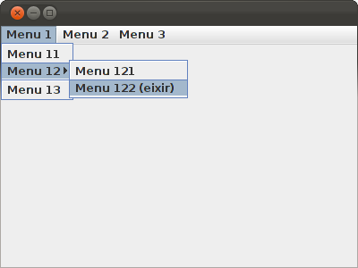

5.- Menús
Per a poder col·locar menús ens els programes gràfic de Java utilitzarem 3 classes de Swing: JMenuBar, JMenu i JMenuItem
- JMenuBar : barra de menú. Serà el menú principal, el que es col·loca dalt de tot.
- JMenu: cada element del menú principal, és a dir, els que es despleguen cap avall.
- JMenuItem: cada element de menú. Els assignarem una acció.
També podrem posar barres separadores (JSeparator).
I si volem un submenú que es desplegue cap a la dreta, col·loquem un JMenu dins d'un JMenu.
Per a incloure un element dins d'un altre, ho farem per un mètode del pare, add, especificant com a paràmetre el fill. El menú principal l'especificarem per un mètode de JFrame, setJMenuBar.
Els JMenuIte són els que poden realitzar una acció, i ho farem registrant-los igual que els botons.
Mirem directament un exemple, on col·loquem un poc de tot.
import java.awt.event.ActionEvent;
import java.awt.event.ActionListener;
import javax.swing.JFrame;
import javax.swing.JMenu;
import javax.swing.JMenuBar;
import javax.swing.JMenuItem;
import javax.swing.JSeparator;
public class Finestra_2 extends JFrame implements ActionListener{
JMenuBar menu_p = new JMenuBar();
JMenu menu_1 = new JMenu("Menu 1");
JMenu menu_2 = new JMenu("Menu 2");
JMenu menu_3 = new JMenu("Menu 3");
JMenuItem menu_11 = new JMenuItem("Menu 11");
JMenu menu_12 = new JMenu("Menu 12");
JMenuItem menu_13 = new JMenuItem("Menu 13");
JMenuItem menu_21 = new JMenuItem("Menu 21");
JMenuItem menu_22 = new JMenuItem("Menu 22");
JMenuItem menu_e = new JMenuItem("Eixir");
JMenuItem menu_121 = new JMenuItem("Menu 121");
JMenuItem menu_122 = new JMenuItem("Menu 122 (eixir)");
public void iniciar(){
this.setSize(400, 300);
this.setJMenuBar(menu_p);
menu_p.add(menu_1);
menu_p.add(menu_2);
menu_p.add(menu_3);
menu_1.add(menu_11);
menu_1.add(menu_12);
menu_1.add(new JSeparator());
menu_1.add(menu_13);
menu_12.add(menu_121);
menu_12.add(menu_122);
menu_2.add(menu_21);
menu_2.add(menu_22);
menu_3.add(menu_e);
this.setVisible(true);
menu_122.addActionListener(this);
menu_e.addActionListener(this);
}
@Override
public void actionPerformed(ActionEvent e) {
if ((e.getSource() == menu_e) || (e.getSource() == menu_122))
System.exit(0);
}
}
El resultat serà aquest (despleguem el de més a l'esquerra per veure la barra separadora i el submenú)

Llicenciat sota la Llicència Creative Commons Reconeixement NoComercial SenseObraDerivada 2.5